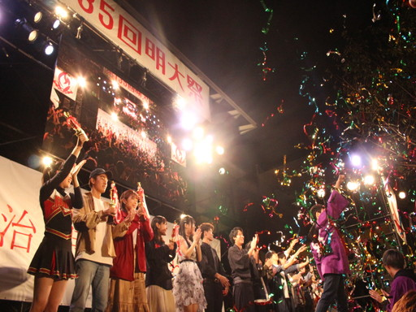

参加団体・参加者のみなさまへ
明大生が主役となって、自分たちの「やりたい」を実現し、多くの人に届けることができる。そんな場所が明大祭です。
第137回明大祭実行委員会は、明大祭に参加するすべての人を全力でサポートします。
明大生である自分たちの輝きを届けましょう！
明大祭の様子はコチラ！
明大祭参加募集説明会
第137回明大祭実行委員会は、明大祭に参加するすべての人を全力でサポートします。
明大生である自分たちの輝きを届けましょう！
明大祭の様子はコチラ！
明大祭参加募集説明会は全日程終了いたしました。
たくさんのご参加ありがとうございました。
明大祭への参加を希望される方は、各形態のページにて情報を随時更新していきますのでご覧ください。
【配布資料】
各種資料(Zip形式)
ファイル内の配布資料は、以下の通りです。
・第137回明大祭参加募集要項
・エントリーシート
・エントリーシート記入例
・誓約書記入例
・団体情報記入フォーム記入例
・新型コロナウイルス流行に伴うお知らせ
エントリーの流れ
たくさんのご参加ありがとうございました。
明大祭への参加を希望される方は、各形態のページにて情報を随時更新していきますのでご覧ください。
【配布資料】
各種資料(Zip形式)
ファイル内の配布資料は、以下の通りです。
・第137回明大祭参加募集要項
・エントリーシート
・エントリーシート記入例
・誓約書記入例
・団体情報記入フォーム記入例
・新型コロナウイルス流行に伴うお知らせ
※誓約書は、明大祭参加募集説明会に参加された方のみに配布しております。
1.「明大祭参加募集要項」に記載されているQRコードを読み取り、エントリー団体情報記入フォームを送信してください。
エントリー団体情報記入フォームについて
| 参加形態 | フォーム 受付開始 |
フォーム受付締め切り |
| 6番教室 ステージ |
5月31日(月) 11:00 |
エントリーシート提出に 参加するまで |
| 屋外ステージ 教室 模擬店 |
6月7日(月) 11:00 |
エントリーシート提出に 参加するまで |
2.エントリー団体情報記入フォームを送信した後に、以下3点のファイルをご用意のうえ、Zoomミーティングにて行われるエントリーシート提出にご参加ください。
エントリーシート提出について
| 参加形態 | 日付 | 時間 |
| 6番教室 ステージ |
6月4日(金) | 12:30～15:30 |
| 屋外ステージ 教室 模擬店 |
6月14日(月) ～16日(水) |
12:30～18:50 |
※必ずエントリー団体情報記入フォームを送信したうえで、Zoomミーティングにて行われるエントリーシート提出にご参加ください。
※エントリーシート提出には、団体代表者・企画責任者・企画副責任者のいずれかの方がご出席ください。
※参加団体のみなさまがご都合のつくお時間にZoomミーティングにご参加ください。ただし、12:30～13:30の昼休みの時間帯は混雑することが予想されます。混雑が予想される時間帯を避けるなどのご協力をお願いいたします。
※エントリーシート提出の詳細につきましては、エントリー団体情報記入フォームの受領を確認した後に、メールにてお知らせいたします。
第137回明大祭実行委員会は明大祭に向け着実に準備を進めておりますが、新型コロナウイルス流行の拡大を受け、例年と対応を変更しております。
詳細に関しましては、以下の資料をご覧ください。
新型コロナウイルス流行に伴うお知らせ
みなさまにはご不便をおかけすることとなり、申し訳ございません。
参加形態紹介
詳細に関しましては、以下の資料をご覧ください。
新型コロナウイルス流行に伴うお知らせ
みなさまにはご不便をおかけすることとなり、申し訳ございません。
明大祭の参加形態には、屋外ステージ、6番教室ステージ、教室、模擬店の4種類があります。
屋外ステージ※以下の参加形態は例年のものになります。新型コロナウイルス流行の拡大に伴い変更が生じる可能性があります。あらかじめご了承ください。
（メインステージ／パフォーマンスエリア／エントランスエリア企画）
・
メインステージ企画

食堂前のスペースに設置される、大きなステージです。本格的な音響や照明などの設備がそろっており、派手な演出をすることもできます。
・
パフォーマンスエリア企画
メディア棟横にある最も広いエリアであり、大人数でのパフォーマンスが可能です。観覧スペースとの距離が近く、観客との一体感を感じることができます。
正門前にあり、多くの人の目に留まりやすいエリアです。少人数や1人での参加、団体同士のコラボレーションも可能です。
6番教室ステージ
・
6番教室ステージ
2階席含めて約900人を収容できる最も大きな教室でのステージです。ランウェイや照明を使用したステージが設営されるため、大規模で華やかな企画を行うことができます。
教室（大教室／中教室／小教室企画）
・
大教室企画
大教室は第一校舎や第二校舎などにあり、音楽企画やゲスト誘致企画が多く行われます。また、今年度からグラウンドでの企画も実施できます。
・
中教室／小教室企画
中教室はメディア棟や第一校舎、小教室は第二校舎以外の全ての校舎に多くあり、体験型の企画や喫茶、展示発表など多様な企画を実施することができます。また、今年度から小教室での1日企画も実施できます。
模擬店（調理／物品販売・参加体験企画）
・
調理企画
サークルやゼミの仲間と鉄板焼きや揚げ物、スイーツなどバリエーション豊かな飲食物を調理・販売することができます。
・
物品販売・参加体験企画

既製品の販売や来場者の方が実際に参加して楽しめる企画を行うことができます。
お問い合わせ